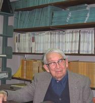

Ernst ISING
(10.05.1900 – 11.05.1998)
Ernst Ising was born in Cologne in 1900. Ernst Ising's parents were the merchant Gustav Ising and his wife Thekla Löwe. After school, he studied physics and mathematics at the University of Göttingen and University of Hamburg. In 1922, he began researching ferromagnetism under the guidance of Wilhelm Lenz. He earned a Ph.D in physics from the University of Hamburg in 1924 when he published his doctoral thesis (an excerpt or a summary of his doctoral thesis was published as an article in a scientific journal in 1925 and this has led many to believe that he published his full thesis in 1925). His doctoral thesis studied a problem suggested by his teacher, Wilhelm Lenz. He investigated the special case of a linear chain of magnetic moments, which are only able to take two positions, "up" and "down," and which are coupled by interactions between nearest neighbors. Mainly through following studies by Rudolf Peierls, Hendrik Kramers, Gregory Wannier and Lars Onsager the model proved to be successful explaining phase transitions between ferromagnetic and paramagnetic states.
After earning his doctorate, Ernst Ising worked for a short time in business before becoming a teacher, in Salem, Strausberg and Crossen, among other places. In 1930, he married the economist Dr. Johanna Ehmer. As a young German–Jewish scientist, Ising was barred from teaching and researching when Hitler came to power in 1933. In 1934, he found a position, first as a teacher and then as headmaster, at a Jewish school in Caputh near Potsdam for Jewish students who had been thrown out of public schools. Ernst and his wife Dr. Johanna Ising, née Ehmer, lived in Caputh near the famous summer residence of the Einstein family. In 1938, the school in Caputh was destroyed by the Nazis, and in 1939 the Isings fled to Luxembourg, where Ising earned money as a shepherd and railroad worker. After the German Wehrmacht occupied Luxembourg, Ernst Ising was forced to work for the army. In 1947, the Ising family emigrated to the United States. Though he became Professor of Physics at Bradley University in Peoria, Illinois, he never published again. Ising died at his home in Peoria in 1998, just one day after his 98th birthday.
(10.05.1900 – 11.05.1998)
Ernst Ising biography (in English) Brazilian Journ. of Phys., 2000 No 4, vol. 30, pp. 649-653
Ernst Ising biography (in Ukrainian) Journ. of Phys. Studies, 1998, No 1, vol. 2, pp.1-2